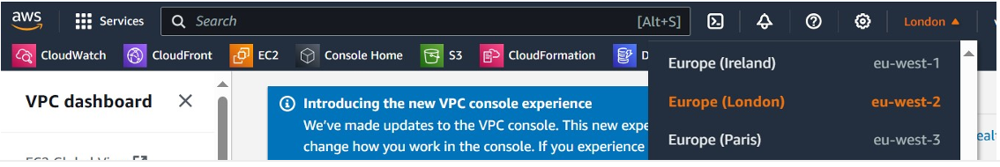
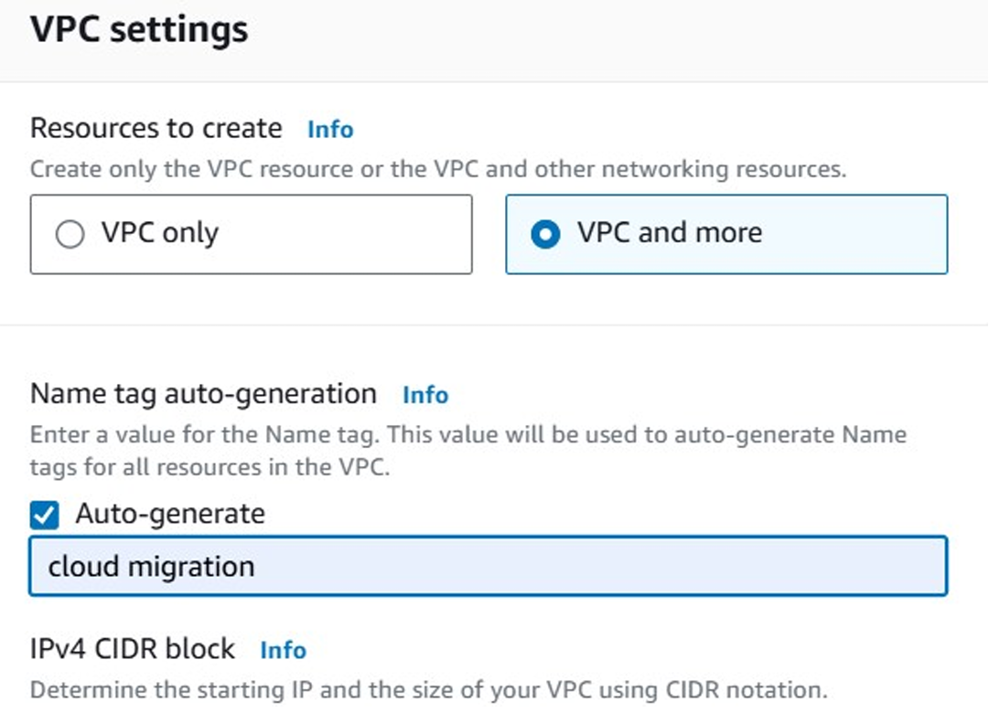
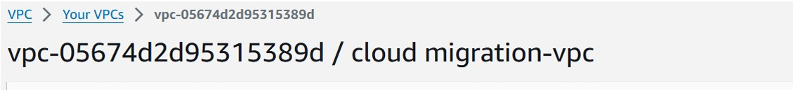
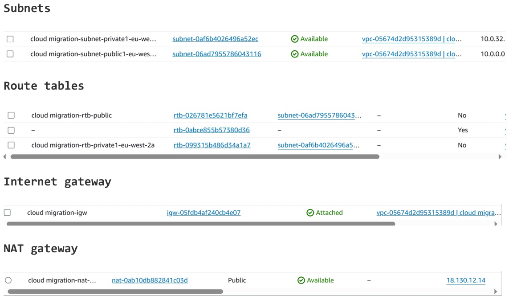
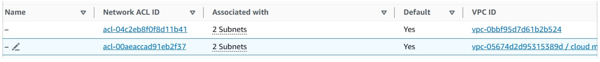
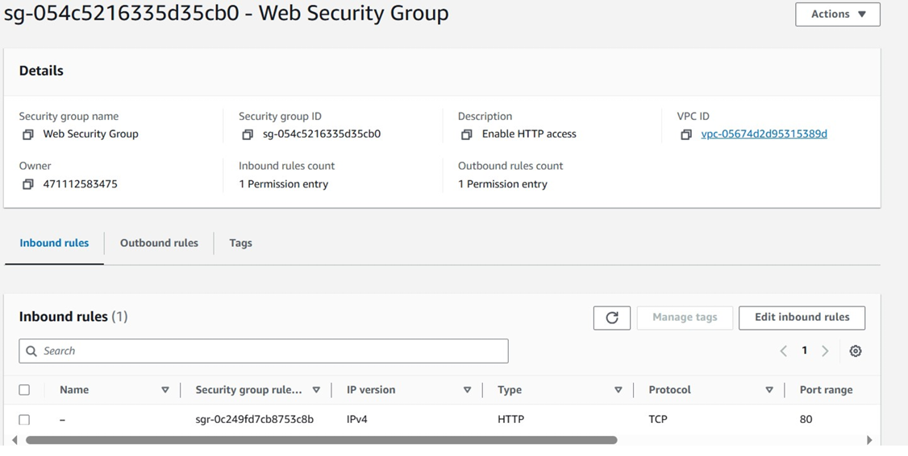

Shahzad Aslam GitHub: saslam-stack (github.com)
AWS Certified Solution Architect Associate Email: saslam79@hotmail.co.uk AWS Certified Cloud Practitioner linkedin.com/in/shahzad-aslam-556719190 HTML, CSS and JavaScript web development
How to build VPC and Launch a Web Server on AWS
Step1: Login to AWS Management Console account and choose your desired
region to build VPC (virtual private cloud).

Type and search for VPC in the search bar at the top. Select VPC from the
list. You are now in the Amazon VPC dashboard. You use the Amazon Virtual
Private Cloud (Amazon VPC) service to build your VPC. Choose Create VPC
and Choose VPC and more. In Name tag auto-generation, click auto generate
and write a name e.g. my project, IPv4 CIDR: Enter 10.0.0.0/18, Tenancy
default, Number of Availability Zones = 1, Number of public subnets =1,
Number of private subnets= 1, NAT gateways: Choose in 1 AZ, VPC endpoints:
Choose None. Click create VPC.

Make a note of newly created VPC.

You will note all VPC resources apart from NACL has a name tag of cloud
migration (See below).

You can change NACL name by clicking on the pen icon.

Create a VPC security group.
You need to create a VPC security group, which acts as a virtual firewall
for your instance. When you launch an instance, you associate one or more
security groups with the instance. You can add rules to each security
group that allow traffic to or from its associated instances.
In the left navigation pane, choose Security Groups and Choose Create
security group. Choose SG name e.g. Web Security Group, Description: Enter
Enable HTTP access. VPC: Choose cloud migration-vpc. Add inbound rule,
Type: Choose HTTP. Source: Choose Anywhere IPv4. Choose Create security
group.

Launch a web server instance.
You need launch an EC2 instance into the new VPC. You configure the
instance to act as a web server. Search for EC2 in the AWS management
console, click launch an instance. Give your EC2 instance a name e.g.
cloud migration web server. On the Quick Start: Choose Amazon Linux.
Amazon Machine Image (AMI): From dropdown, Choose Amazon Linux 2023 AMI.
In the Instance type section, choose t2.micro (free tier eligible). Create
a new keypair. In the Network settings section, choose Edit and configure
the following options: VPC - required: Choose cloud migration-vpc. Subnet:
Choose cloud migration public subnet. Auto-assign public IP: Choose
Enable. Firewall (security groups): Choose Select existing security group
i.e. web security group. Expand Advanced details, Under User data, copy
and paste the following code.